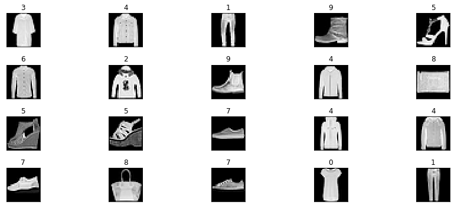
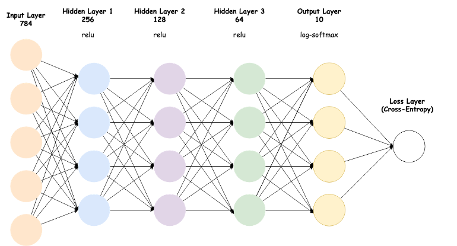
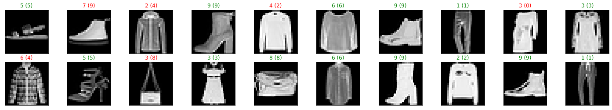

This project is a part of the Bertelsmann Tech Scholarship AI Track Nanodegree Program from Udacity. In this project, we are going to use Fashion MNIST data sets, which is contained a set of 28X28 greyscale images of clothes. Our goal is building a neural network using Pytorch and then training the network to predict clothes. This trained network will return a probability for 10 classes of clothes shown in images.
Let’s write down a route map to follow
torch.optim implement various optimization algorithms like SGD and Adam.torch.nn.functional for non-linear activation functions like relu, softmin, softmax, logsigmoid, etc.
transforms.Compose creates a series of transformation to prepare the dataset.transforms.ToTenser convert PIL image(L, LA, P, I, F, RGB, YCbCr, RGBA, CMYK, 1) or numpy.ndarray (H x W x C) in the range [0, 255] to a torch.FloatTensor of shape (C x H x W) in the range [0.0, 1.0].transform.Normalize Normalize a tensor image with mean and standard deviation. Tensor image size should be (C x H x W) to be normalized which we already did use the transforms.ToTenser.datasets.FashionMNIST to download the Fashion MNIST datasets and transform the data.The train paremeter set the True (train=True) to get trained dataset, otherwise set the parameter False for the test dataset.torch.utils.data.Dataloader takes our data train or test data with parameter batch_size and shuffle. batch_size define the how many samples per batch to load, and shuffle parameter set the True to have the data reshuffled at every epoch.
Our images are 28x28 2D tensors, so we need to convert them into 1D vectors. 784 is 28 times 28, so, this is typically called flattening, we flattened the 2D images into 1D vectors. This is our input layer and here we need to 10 output layers for the classification of the clothes.
While we are defining the hidden layers, we are able to choose the arbitrary number. But this selection directly affects our neural network performance. We should modify the number to find out an optimized model for our image classification problem.
nn.Module that building neural networks.super().__init__() this creates a class that tracks the architecture and provides a lot of useful methods and attributes.self.fc1 = nn.Linear(784, 256): This line creates a module for a linear transformation, xw+b, with 784 inputs and 256 outputs for first hidden layer and assigns it to self.fc1. The module automatically creates the weight and bias tensors which we'll use in the forward method.The training pass process is as follow:
model = Classifier(): This line is actually create our model.
zero_grad(): Clear the gradients of all optimized variables
log_ps = model(images): Make a forward pass through the network to getting log probabilities bypassing the images to the model.
loss = criterion(log_ps, lables): Use the log probabilities (log_ps) and labels to calculate the loss.
loss.backward(): Perform a backward pass through the network to calculate the gradients for model parameters.
optimizer.step(): Take a step with the optimizer to update the model parameters.
We keep tracking the validation loss and train loss to investigate the averages values over time. The following plot shows averages values for train loss and validation loss which calculated for each epoch.
Finally, we test our best model on previously unseen test data. Testing on unseen data is a good way to check that our model.
So, we come to the end. We would like the see how our model performs. For this, we are going the print out the accuracy of our model
Test Loss: 0.445839Then visualize the data to displays test images and their labels in the following format: predicted (ground-truth). The text will be green for accurately classified examples and red for incorrect predictions.
Finally, completed the train and test our neural network. This project shows the road map for the basic neural network using Pytorch. Thank you so much Udacity and Bertelsmann to reach out to these courses. For the Note, I am still learner so, please let me know any additional information.
Follow me on Twitter